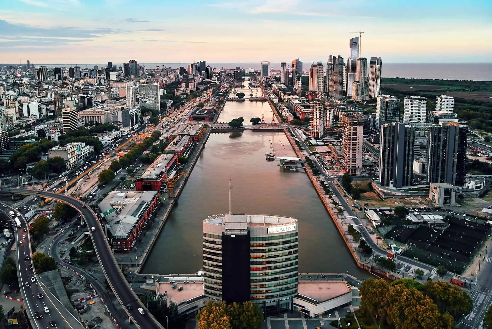
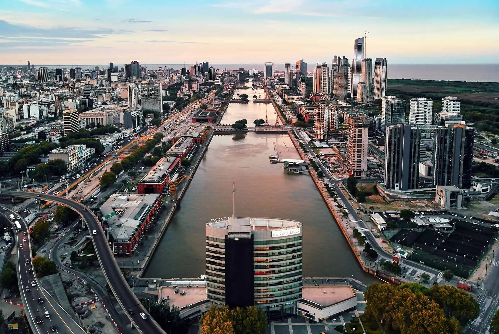

Fragata Presidente Sarmiento

Una visita a la Fragata Presidente Sarmiento, es una buena alternativa para interesados en la historia o en la náutica, correspondiendo al primer buque escuela moderno de Argentina, el cual realizó entre 1897 y 1939, 39 viajes alrededor del mundo, recorriendo un total de 1 100 000 millas marinas. Hoy transformado en un barco museo, permite descubrir cómo era la vida cotidiana de sus tripulantes, las distintas instalaciones de un buque escuela, incluyendo la sala de maquinas y llamativos objetos que se fueron coleccionando a lo largo de los años.